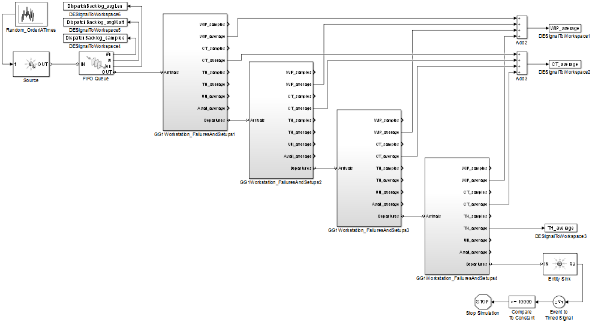

Push versus Pull
The contents of the PushVsPull folder concern the control decision of when to release work into a production system, and specifically the difference between push and pull control paradigms. The difference between push and pull is effectively the difference between a system with open-loop versus closed-loop control. In a push system, there is no feedback loop from the production system's state to the dispatch controller, meaning no feedback loop from what the system is doing and can do to what the system is being asked to do. In a pull system, such a feedback loop exists.
Hopp & Spearman define the terms as: "A push system schedules the release of work based on demand, while a pull system authorizes the release of work based on system status." (pg. 340, ed. 2) They further explain:
- "A push system releases a job into a production process (factory, line, or workstation) precisely when called to do so by an exogenous schedule, and the release time is not modified according to what is happening in the process itself. In contrast, a pull system only allows a job onto the floor when a signal generated by a change in line status calls for it." (pg. 340, ed. 2)
- "Another useful way to think about the distinction between push and pull systems is that push systems are inherently make-to-order while pull systems are make-to-stock." (pg. 340, ed. 2)
- "Push systems control throughput and observe WIP. Pull systems control WIP and observe throughput." (pg. 354, ed. 2)
- "Most real-world systems have aspects of both push and pull. For instance, if a job is scheduled to be released by MRP, but is held out because the line is considered too congested, then the effect is a hybrid push-pull system. Conversely, if a kanban system generates a card authorizing production but the actual work release is delayed because of anticipated lack of demand for the part, then this, too, is a hybrid system." (pg. 341, ed. 2)
The goal of this section is to create tools for exploring the push, pull and hybrid paradigms for dispatching work into a production system. In the first iteration these tools are simulation models, and analytical approximations (for example mean value analysis, described in Hopp & Spearman chapter 10, ed. 2) are not yet implemented. A collection of DEMO scripts are included, each serving as a usage example, an illustration of what is possible, an idea for a lab experiment. The collection is certainly not exhaustive, and it is hoped that they will inspire users to create more, plus transcribe the good ones into carefully-defined lab experiments for education. The remainder of this overview summarizes what the included DEMO scripts do.
Contents
- Simulation Model: Make-to-Order PUSH System with an optional WIP Cap
- Behavior of a WIP-Capped Push System as the WIP Cap Changes
- Simulation Model: Make-to-Stock PULL System with CONWIP
- Behavior of a CONWIP Pull System as the CONWIP Amount Changes
- Behavior of a CONWIP Pull System as Demand Variability Changes
- CONWIP Amount Needed to Realize a Fill Rate Threshold as Demand Variability Changes
- Simulation Model: Make-to-Stock PUSH System
- Scenarios in which a CONWIP Pull System Performs Worse than a Push System
Simulation Model: Make-to-Order PUSH System with an optional WIP Cap
The following simulation model implements a make-to-order production system with the simplest- interesting way to prevent a WIP (work-in-process) explosion - limit the maximum WIP at each workstation. Many of the single workstation models developed expose queue capacity as a parameter, which in traditional queueing theory is infinite. Setting this to a finite value limits the maximum WIP at each workstation, and if all workstations have a finite value then the overall WIP in the system is capped.
While this model has some aspects of a kanban system - the completion of an order cascades "production authorization" upstream from the final workstation to the first, in the form of an empty queue slot - it is fundamentally different because it is make-to-order rather than make-to-stock. No demand process is modeled independent of the order release process, and there is no feedback loop from system state to the release of orders. In the case where the order interarrival rate exceeds the system's maximum throughput, a dispatch backlog queue is included to hold released orders for which there is no capacity in the system.
open_system('ProdSys_MakeToOrderPUSH_optionalWIPCap');
 Behavior of a WIP-Capped Push System as the WIP Cap Changes
The following demo sweeps over the WIP Cap in a WIP-Capped production system. The demo invokes the simulation model ProdSys_MakeToOrderPUSH_optionalWIPCap (through its wrapper function) over a range of per-workstation queue capacities. The whole system's WIP cap is the sum of each workstation's queue capacity plus k server slots. The expected result is that Work-In-Process and Cycle Time will be controlled by the WIP Cap, as well as Throughput up to the system's capacity, and that the average dispatch backlog will increase as a decreasing WIP Cap reduces the system's capacity.
Parameters which can be changed by a user include order interarrival times' distribution, mean, and variability, processing times' distribution, mean, and variability at each workstation, and the queue capacity at each workstation. The model uses the G/G/k workstation library block which includes both preemptive failures and non-preemptive setups, and if desired values can be set for time-until-failure, repair time, count-until-setup, and setup time at each workstation.
DEMO_PushPull_NoWipCapVersusYesWipCap
Simulation Model: Make-to-Stock PULL System with CONWIP
The following simulation model implements a make-to-stock production system with a constant amount of WIP (CONWIP). Make-to-stock means that finished products may be available to meet demands immediately upon their arrival. A constant amount of WIP is enforced by a constant amount of Kanban-like cards, which at any time may be in-production or in the Finished Goods Inventory. Production of a good initiates upon arrival of a Kanban-like card at the first workstation. Only after a finished good is matched with a demand is a Kanban-like card freed and recycled through a feedback loop.
Choosing a CONWIP amount involves a tradeoff between finished goods inventory and demand backorders. While using CONWIP to control WIP levels and cycle times offers many benefits, it is not a panacea - a (static) CONWIP paradigm cannot cure a mismatch between production capacity and demand, and also may not recover well from disruptions. An interesting extension which is not yet implemented would be a non-stationary demand process and/or the ability to dynamically change the CONWIP amount in response to system state.
open_system('ProdSys_MakeToStockPULL_CONWIP');

Behavior of a CONWIP Pull System as the CONWIP Amount Changes
The following demo was created to answer the question "What CONWIP amount is needed to realize a certain fill rate (the fraction of demand filled without delay) in a certain production system?" The demo invokes the simulation model ProdSys_MakeToStockPULL_CONWIP (through its wrapper function) over a range of CONWIP levels. The output visualizes a variety of statistics - average WIP, CT, TH, fill rate, finished goods inventory level, and demand backorder level. To answer the question, the important subplot shows average Fill Rate versus CONWIP Amount.
Parameters which can be changed by a user include demand interarrival times' distribution, mean, and variability, processing times' distribution, mean, and variability at each workstation, and a range of CONWIP amounts. The model uses the G/G/k workstation library block which includes both preemptive failures and non-preemptive setups, and if desired values can be set for time-until-failure, repair time, count-until-setup, and setup time at each workstation.
DEMO_PushPull_SweepCONWIPAmount_VisualizeAllStats
Behavior of a CONWIP Pull System as Demand Variability Changes
The following demo was created to answer the question "For a fixed CONWIP amount, what is the effect of increasing demand interarrival time variability in a certain production system?" The demo invokes the simulation model ProdSys_MakeToStockPULL_CONWIP (through its wrapper function) over a range of demand interarrival time variability, as measured by SCV (squared coefficient of variability, the variance divided by the mean^2). The output visualizes a variety of statistics - average WIP, CT, TH, fill rate, finished goods inventory level, and demand backorder level.
Parameters which can be changed by a user include demand interarrival times' distribution, mean, and a range of a range of SCVs, processing times' distribution, mean, and variability at each workstation, and the CONWIP amount. The model uses the G/G/k workstation library block which includes both preemptive failures and non-preemptive setups, and if desired values can be set for time-until-failure, repair time, count-until-setup, and setup time at each workstation.
DEMO_PushPull_SweepDemandSCV_VisualizeAllStats
CONWIP Amount Needed to Realize a Fill Rate Threshold as Demand Variability Changes
The following demo was created to answer the question "What CONWIP amount is needed to realize a certain fill rate, and how does that change as demand interarrival time variability increases?" The demo invokes the simulation model ProdSys_MakeToStockPULL_CONWIP (through its wrapper function) over a range of demand interarrival time variability, as measured by SCV (squared coefficient of variability, the variance divided by the mean^2). For each demand SCV, the minimum CONWIP amount to realize fill rate at or above a threshold is empirically determined, and the output visualizes this number as a function of demand SCV.
Parameters which can be changed by a user include demand interarrival times' distribution, mean, and a range of a range of SCVs, processing times' distribution, mean, and variability at each workstation, and a threshold for average fill rate. The model uses the G/G/k workstation library block which includes both preemptive failures and non-preemptive setups, and if desired values can be set for time-until-failure, repair time, count-until-setup, and setup time at each workstation.
DEMO_PushPull_SweepDmdSCV_FindCONWIPToRealizeFillRate
Simulation Model: Make-to-Stock PUSH System
The following simulation model was created to enable direct comparisons between push and pull. The model implements the same make-to-stock system as ProdSys_MakeToStockPULL_CONWIP, which separates the order release process from the demand arrival process to make finished products available to satisfy demands immediately upon arrival. The important difference between this and ProdSys_MakeToStockPULL_CONWIP is that the feedback loop from system state to the release of orders is removed, and orders are instead released using the same open-loop time-based push paradigm as ProdSys_MakeToOrderPUSH_optionalWIPCap.
open_system('ProdSys_MakeToStockPUSH');
Scenarios in which a CONWIP Pull System Performs Worse than a Push System
The following demo makes side-by-side comparisons of the push and pull order release paradigms. The demo invokes the simulation models ProdSys_MakeToStockPUSH and ProdSys_MakeToStockPULL_CONWIP (through their wrapper functions), the latter over a range of CONWIP amounts. The output visualizes average work-in-process, cycle time, throughput, and demand backorder level in the two paradigms. The expected result is that, for a sufficient amount of CONWIP, the pull paradigm will out-perform the push paradigm.
Another purpose of this demo is to visualize a scenario in which a pulling CONWIP system actually performs worse than a push system. This is done by visualizing single-replication traces of the demand backorder level to see how each system recovers from disruptions. The expected result is that increasing CONWIP level will ensure that a system will recover at all and will recover faster from disruptions. While it may seem straightforward to avoid poorly-performing CONWIP scenarios by setting the CONWIP amount sufficiently high, recall that there is also an incentive to keep the CONWIP amount low to keep the finished goods inventory level low. Another complication is that a non-stationary demand process may cause a static CONWIP level which is sufficiently high in the past to become too low over time.
Parameters which can be changed by a user include demand interarrival times' distribution, mean, and variability, processing times' distribution, mean, and variability at each workstation, and a range of CONWIP amounts. The models use G/G/k workstation library blocks which includes both preemptive failures and non-preemptive setups, and if desired values can be set for time-until-failure, repair time, count-until-setup, and setup time at each workstation. In the make-to-stock push model, order interarrival times are set equal in distribution to demand interarrival times; otherwise, the lack of feedback control will lead to a steadily-increasing mean shortage or surplus.
DEMO_PushPull_SideBySideCompare